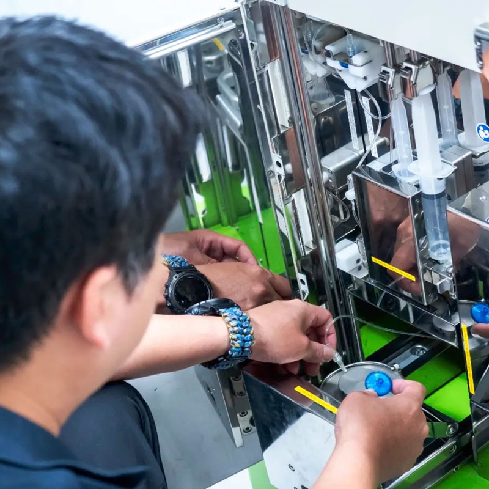
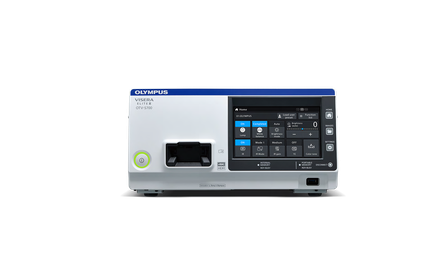

顏色
頁面請使用語意層變數（--yh-color-*），不要直接寫色碼。以下依用途分組。
品牌藍
--yh-color-primary · #143A82主按鈕、區塊大標、導覽--yh-color-accent · #1F5BB5英文眉標、數據、分類--yh-color-interactive · #2E72D6hover、焦點框--yh-blue-200 · #AFC9EE篩選 chip 選取中--yh-color-border-brand · #D6E2F4藍色系框線--yh-color-bg-tint · #F5F8FC日期標籤底、淺藍底深藍（深色區塊、頁尾）
--yh-ink-950 · #091428頁尾、頂部資訊列--yh-ink-900 · #0B1730Hero 底色--yh-color-bg-dark · #0E1C3D深色區塊、漸層起點--yh-ink-700 · #1A2740頁尾分隔線文字與中性色（帶藍調的灰）
--yh-color-title · #1C2533卡片標題、h4--yh-color-text · #5A6473內文--yh-color-text-muted · #8893A8日期、輔助說明--yh-color-border-control · #DCE1E8按鈕、tab、輸入框--yh-color-border · #E5E8EC卡片框線--yh-color-bg-alt · #F4F6F9淺灰區塊底狀態
--yh-color-success · #2B8A4D認證、上架中--yh-green-50 · #F4FAF6認證區塊底字體與字級
中文用 Noto Sans TC；英文眉標、數字、型號用 Manrope（加 yh-en）。標題字級在 ≤900px、≤640px 會自動縮小，下表是桌機值。
- Display 46--yh-fs-display
- 40+
- H1 40--yh-fs-h1 · 800
關於元新醫藥
- H2 34--yh-fs-h2 · 800
四十年的核醫發展歷程
- H3 26--yh-fs-h3 · 800
輻防教育與專業顧問
- H4 22--yh-fs-h4 · 700
核醫從業人員輻射防護基礎訓練
- H5 18--yh-fs-h5 · 800
產品規格
- Lead 16--yh-fs-lead
核醫專業顧問，建構安全、高效的核醫藥物生態系。
- Body 15--yh-fs-body · 行高 1.8
涵蓋法規、劑量管理與作業安全，完訓核發認證時數，協助從業人員取得輻防專業資格。
- Body sm 14--yh-fs-body-sm
放射性藥物與精準醫療的結合，正重新定義腫瘤診斷與治療的邊界。
- Eyebrow 13--yh-fs-eyebrow · .16em
- Training & Consulting
- Caption 12--yh-fs-caption
- © 2026 元新儀器 KEN YUAN HSIN CO., LTD All rights reserved.
區塊標題組合
輻防教育與專業顧問
保證取證的訓練課程，解決核醫現場的實務痛點。
<div class="yh-section-head yh-section-head--split">
<div>
<span class="yh-eyebrow">Training & Consulting</span>
<h2 class="yh-h2">輻防教育與專業顧問</h2>
<p class="yh-text">…</p>
</div>
<a class="yh-link-arrow" href="…">全部課程 →</a>
</div>
間距與版面
以 4px 為基準。內容最大寬 1200px；左右邊距 32 → 24 → 20 → 16px；區塊上下留白 88 → 64 → 40px，都已寫在 token 的斷點覆寫裡。
<section class="yh-section yh-section--alt"> ← 88/64/40 上下留白＋底色
<div class="yh-container"> ← 1200 寬＋左右邊距
<div class="yh-section-head">…</div>
<div class="yh-grid yh-grid--3">…</div> ← 3 欄 → 2 欄（≤900）→ 1 欄（≤640）
</div>
</section>
圓角
只有四個值，依「這是什麼」選，不要自己新增。
獨立配圖
卡片、數據框
縮圖、輸入框
按鈕、標籤
Hero 左上＋右下
陰影
陰影帶品牌藍，且大多是 hover 才出現。靜止狀態用 1px 框線區隔即可。
卡片靜止狀態
卡片 hover 上浮
獨立配圖
主按鈕 hover
按鈕
一律膠囊形、最小高度 44px（手指好按）。箭頭包在 yh-btn__arrow，hover 時會往右移。
淺色底
深色底
<a class="yh-btn yh-btn--primary">送出洽詢</a> <a class="yh-btn yh-btn--outline">立即報名 <span class="yh-btn__arrow">→</span></a> 尺寸：yh-btn--sm（36px）／預設（44px）／yh-btn--lg（56px）／yh-btn--block（滿版）
標籤與篩選
三種長得像但用途不同：tag 只顯示資訊不能點；chip 用來篩選，可以多選；tab 用來切換分類，一次只選一個。
tag · 日期梯次、狀態
chip · 產品篩選
tab · 文章分類
卡片
卡片圓角 16px、1px 框線。整張可點的卡片加 yh-card--link：hover 上浮 5px，圖片放大 1.06 倍。

從 PET/CT 到 theranostics：核醫診療合一的下一個十年
放射性藥物與精準醫療的結合，正重新定義腫瘤診斷與治療的邊界。

核醫從業人員輻射防護基礎訓練
涵蓋法規、劑量管理與作業安全，完訓核發認證時數。
列表小卡＋縮圖

內容卡＋小標題（產品規格頁）
產品規格
I-123 MIBG 診斷用注射液，適用於嗜鉻細胞瘤與神經母細胞瘤之診斷造影。
<a class="yh-card yh-card--link" href="…">
<div class="yh-card__media"><img …></div>
<div class="yh-card__body">
<span class="yh-card__meta">產業洞察</span>
<h3 class="yh-card__title">…</h3>
<p class="yh-card__text">…</p>
</div>
</a>
橫式（圖左文右，手機自動改直式）：加 yh-card--horizontal
圖片
不在卡片裡的獨立配圖用 yh-media（24px 圓角），可加比例與陰影。小縮圖用 yh-thumb（10px）。
yh-media--4x3／--16x9／--2x1 固定比例；不加比例時高度由外層決定。
yh-media--shadow 加品牌藍的柔和陰影，適合放在白底上的主視覺配圖。
Hero
只有左上、右下兩個角是圓的，這是品牌的招牌造型。圓角隨螢幕縮小：90 → 64 → 36 → 28px。有照片時加 yh-hero--image，會自動加上左深右淺的遮罩。

產品與服務
依臨床應用分類的核醫藥物、輻射安全設備與檢驗試劑。
內頁：yh-hero（桌機 420px，手機 286px） 無照片：yh-hero yh-hero--short（280px，深藍漸層） 首頁：yh-hero yh-hero--home（桌機 700px，手機 50dvh）
關鍵數據
數字用 Manrope，並用等寬數字對齊。桌機 4 欄，手機 2×2。
表單
輸入框高 46px、圓角 10px，聚焦時顯示藍色光暈。手機版字級自動變成 16px，避免 iPhone 點擊時畫面放大。
斷點
全部用 max-width。CSS 變數不能寫在 @media 裡，請直接寫數值。
| 寬度 | 裝置 | 主要變化 |
|---|---|---|
| > 1024 | 桌機 | 內容 1200px、邊距 32px、區塊留白 88px、Hero 圓角 90px |
| ≤ 1024 | 平板橫向 | 邊距 24px |
| ≤ 900 | 平板直向 | 導覽改漢堡選單；3、4 欄格線變 2 欄；H2 30px；區塊留白 64px；Hero 圓角 64px；頁尾兩欄 |
| ≤ 640 | 手機 | 格線變 1 欄；H2 26px、H1 28px；邊距 20px；區塊留白 40px；內頁 Hero 286px；Hero 圓角 36px；頁尾三欄並排 |
| ≤ 400 | 小手機 | 邊距 16px；Hero 圓角 28px |